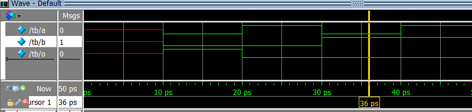
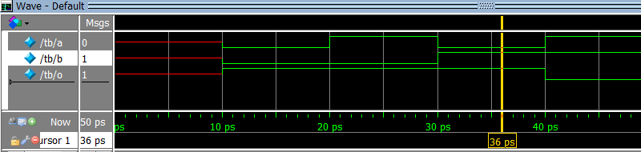
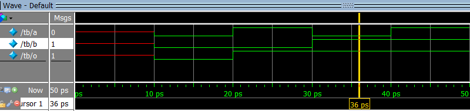
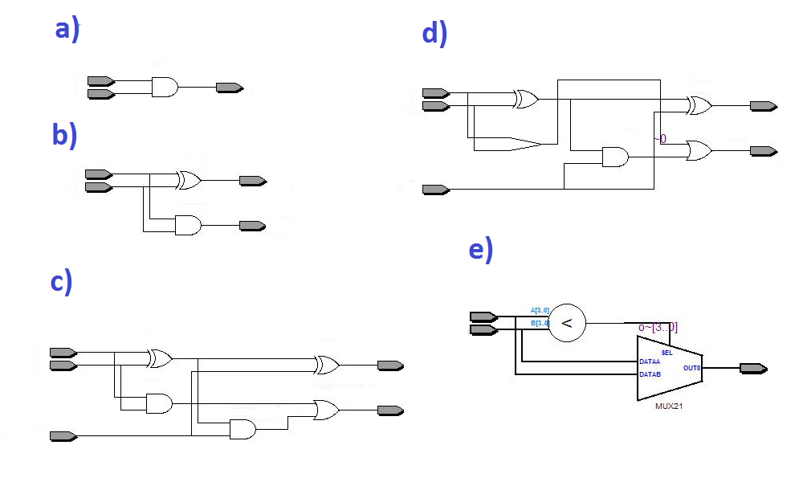
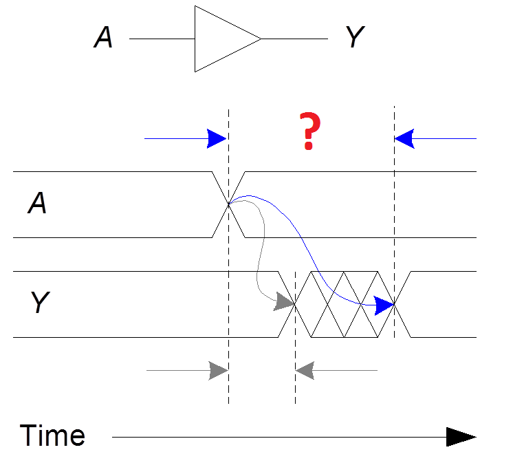

Understanding Digital Logic Design
Joint seminar by Almaty Management University and Imagination Technologies August 23 2016Quiz 2.1 - Combinational Logic
Name ___________________________________________________________________
1. Which waveform is the result of the simulation below? module design (input a, input b, output o); assign o = ~ a | ~ b; endmodule module tb; logic a, b, o; design design_inst (a, b, o); initial begin $dumpvars; $monitor ("%t a %b b %b o %b", $time, a, b, o); #10; a = 0; b = 0; #10; a = 1; b = 0; #10; a = 0; b = 1; #10; a = 1; b = 1; #10; end endmodule a) b)  c)  d)  e) 2. What is the result of synthesis of this module? module design ( input a, input b, output sum, output carry ); assign sum = a ^ b; assign carry = a & b; endmodule  3. What kind of delay is illustrated on the picture below (marked by "?")? a) Propagation delay: tpd = max delay from input to output b) Contamination delay: tcd = min delay from input to output  Sources of some pictures: Slides from Steve Harris and Sarah Harris that accompany textbook Digital Design and Computer Architecture, Second Edition by David Harris and Sarah Harris, 2012 Quiz is created by Yuri Panchul